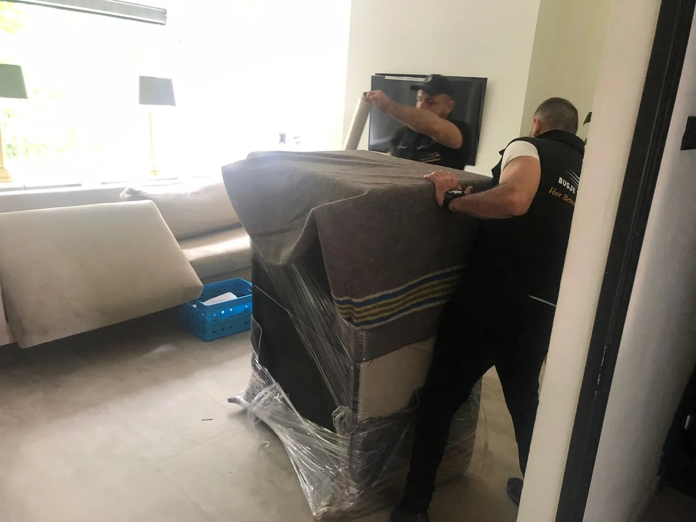

D Mul
“Goede service, een duidelijke prijs en een prettige samenwerking.”
Verhuisbedrijf in Utrecht en omgeving
Vertel ons kort uw verhuizing en u krijgt snel een persoonlijk voorstel — helder en zonder verrassingen.

Beelden van het verhuiswerk
Deze foto's zijn door het bedrijf aangeleverd en tonen echte verhuizingen, eigen materieel en zorgvuldig beschermd meubilair.


Ervaringen van klanten
Echte ervaringen van klanten in Utrecht en omgeving. Bekijk de volledige, actuele beoordelingen op ons Google-profiel.
“Goede service, een duidelijke prijs en een prettige samenwerking.”
“Vriendelijk, netjes gewerkt, op tijd en vlot met de montage.”
“Hard gewerkt en een grote verhuizing snel en zorgvuldig uitgevoerd.”
Uw situatie als vertrekpunt
Elke servicepagina beantwoordt eerst wat u moet weten, welke gegevens nodig zijn en welke prijsregels relevant zijn.
Voor een woning, appartement of losse inboedel.
Bekijk particulier verhuizenVoor locaties, inventaris, planning en taakverdeling.
Bekijk zakelijk verhuizenVoor een urgente aanvraag op basis van beschikbaarheid.
Bekijk spoedverhuizenVoor een opslagvraag tussen twee verhuismomenten.
Bekijk opslag en verhuizenVerhuizen in en rond Utrecht
Kies de route die bij uw aanvraag past. Daarna controleert u beide adressen, bereikbaarheid, volume en gewenste hulp.
Beschrijf vertrek en aankomst afzonderlijk. Etage, lift, loopafstand en laadruimte kunnen per adres verschillen.
Controleer een route binnen Utrecht →Geef ook de aankomstzijde volledig door, zodat toegang, verkeersruimte en mogelijke voorbereiding beoordeeld kunnen worden.
Bereid aankomst in Utrecht voor →Laat de volledige route beoordelen. De afstand alleen vertelt nog niet hoeveel tijd, mensen of voertuigruimte nodig zijn.
Bereken eerst het verhuisvolume →
Goed voorbereid verhuizen
Een goede offerte begint niet bij uw telefoonnummer, maar bij de verhuizing zelf. Beschrijf beide adressen, de bereikbaarheid en wat er meegaat. Zo kan uw aanvraag gericht worden beoordeeld.
Bereid uw verhuizing in Utrecht voor →Bekijk de volledige werkwijze →Van vraag naar afspraak
U houdt overzicht over wat al is berekend en wat nog beoordeeld moet worden.
Bekijk een indicatie met de bevestigde prijsregels.
Vul route, toegang, omvang en gewenste hulp aan.
Ontvang een offerte met werkzaamheden en afspraak.
Veelgestelde vragen
De belangrijkste vragen over prijs en planning horen al op de website beantwoord te worden.
Meestal snel: app of bel ons en u krijgt persoonlijk antwoord. Via de aanvraag stuurt u uw verhuisdetails in één keer door.
Ja. U ontvangt een persoonlijk voorstel op maat, afgestemd op uw route, toegang en omvang. Volledig vrijblijvend.
Dat hangt af van de actuele beschikbaarheid en uw situatie. Bel om de kerngegevens direct te bespreken.
Busje komt zo richt zich op Utrecht en omgeving. Deel beide adressen om uw route te laten beoordelen.
Direct contact met de eigenaar
App of bel ons rechtstreeks, of stuur uw verhuisdetails via de aanvraag. Vrijblijvend en zonder wachtrij.